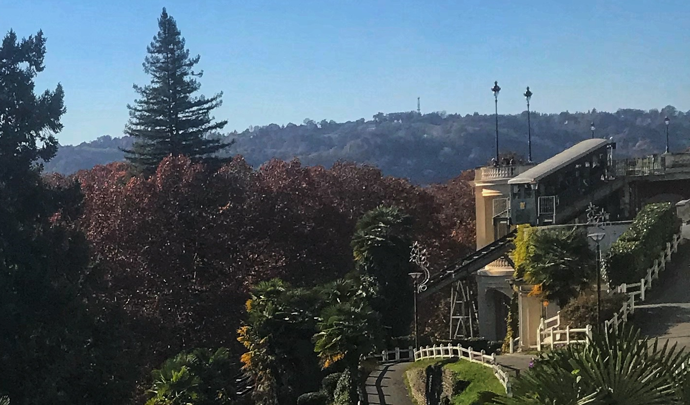

Hi, we're Emily and Rayane!
Let us tell you why we love Pau...
Welcome to one of the friendliest, most beautiful places in France. An hour and a half from the Atlantic coast, less than 2 hours from the Spanish Basque border, and right at the feet of the majestic Pyrenees, Pau is the epicentre of one of the most diverse regions in the country. It may not be at the top of the list of French tourist destinations, at least not since the early 1900’s. But the treasures in and around this charming city make it one of the country’s hidden gems — and certainly the best place we’ve ever called home.
Wherever you’re from and however you ended up in Pau, we're going help you discover the full potential of your new community. We just know you’re going to love it here!
Rayane and I arrived in early September, 2018. Before that, we had been professional nomads. Seriously. We moved 12 times within a period of 2 years, traversing France, Spain, the UK, Western Africa, the US and Canada. As you might imagine, we were ready to put our suitcases away and settle in somewhere for a while.
We never imagined that this is where we’d end up, but here we are, suitcases out of sight, happy as clams discovering our quaint new home. Many people asked us “Why Pau?” The short answer is a job. But there’s more to it than that. We wanted to live somewhere that would allow us to actually live. To enjoy the activities that we love and lost touch with during our vagabond years and big-city adventures. We wanted to escape the walls of our apartment and reconnect with nature. To feel like a part of a community instead of being shuffled around with the masses. To rediscover what it’s like to be people, and not just worker bees. And this is where we found what we were looking for.
I’m writing this blog for you because I want you to share in all of the amazing experiences that we’re getting to enjoy in Pau and the surrounding region. There’s so much to offer, and you don’t have to go far to find it. You just have to know where to look, and I’m going to show you.
- This blog is for you if you’re:
- New to Pau and ready to get out there and see what’s in store
- An expat looking for fellow expats to connect with
- Wanting to connect with the French community
- A long-time resident looking for new inspiration
- Visiting Pau and curious about what to do here
- An outdoor enthusiast
- A foodie
- A fitness buff
- A history lover
- Inspired by culture: festivals, art, music, books, cinema, and more
- Tired of Netflix and looking for some LAFS (Life Away From Screens)…
We hope you enjoy your time in Pau and that we can guide you toward some incredible life-long memories here. It’s a friendly place with some genuinely great people, so don’t forget to smile, ask someone how their day is, and spread a spirit of kindness and community.